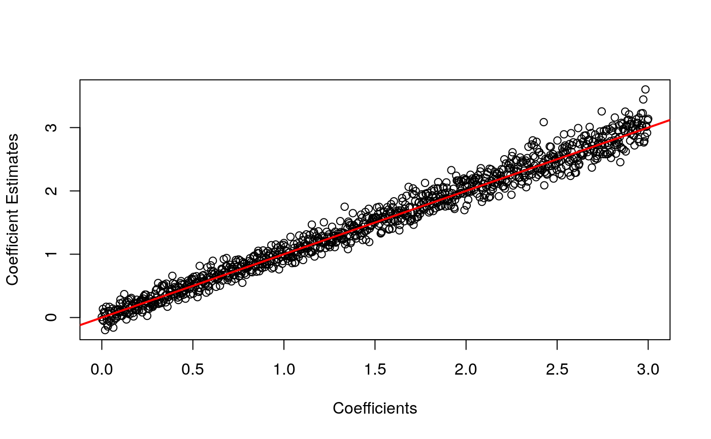

Given a matrix of counts (\(Y\)) where \(log_2(E[Y]) = Q\),
a design matrix (\(X\)), and a matrix of coefficients (\(B\)),
thin_diff will generate a new matrix of counts such that
\(log_2(E[Y]) = BX' + u1' + Q\), where \(u\) is some vector
of intercept coefficients. This function is used by all other
thinning functions.
thin_base(mat, designmat, coefmat, relative = TRUE)
| mat | A numeric matrix of RNA-seq counts. The rows index the genes and the columns index the samples. |
|---|---|
| designmat | A design matrix. The rows index the samples and the columns index the variables. The intercept should not be included. |
| coefmat | A matrix of coefficients. The rows index the genes and the columns index the samples. |
| relative | A logical. Should we apply relative thinning ( |
A matrix of new RNA-seq read-counts. This matrix has the signal
added from designmat and coefmat.
select_countsFor subsampling the rows and columns of your real RNA-seq count matrix prior to applying binomial thinning.
thin_diffFor the function most users should be using for general-purpose binomial thinning.
thin_2groupFor the specific application of thinning in the two-group model.
thin_libFor the specific application of library size thinning.
thin_geneFor the specific application of total gene expression thinning.
thin_allFor the specific application of thinning all counts uniformly.
## Simulate data from given matrix of counts ## In practice, you would obtain Y from a real dataset, not simulate it. set.seed(1) nsamp <- 10 ngene <- 1000 Y <- matrix(stats::rpois(nsamp * ngene, lambda = 100), nrow = ngene) X <- matrix(rep(c(0, 1), length.out = nsamp)) B <- matrix(seq(3, 0, length.out = ngene)) Ynew <- thin_base(mat = Y, designmat = X, coefmat = B) ## Demonstrate how the log2 effect size is B Bhat <- coefficients(lm(t(log2(Ynew)) ~ X))["X", ] plot(B, Bhat, xlab = "Coefficients", ylab = "Coefficient Estimates")